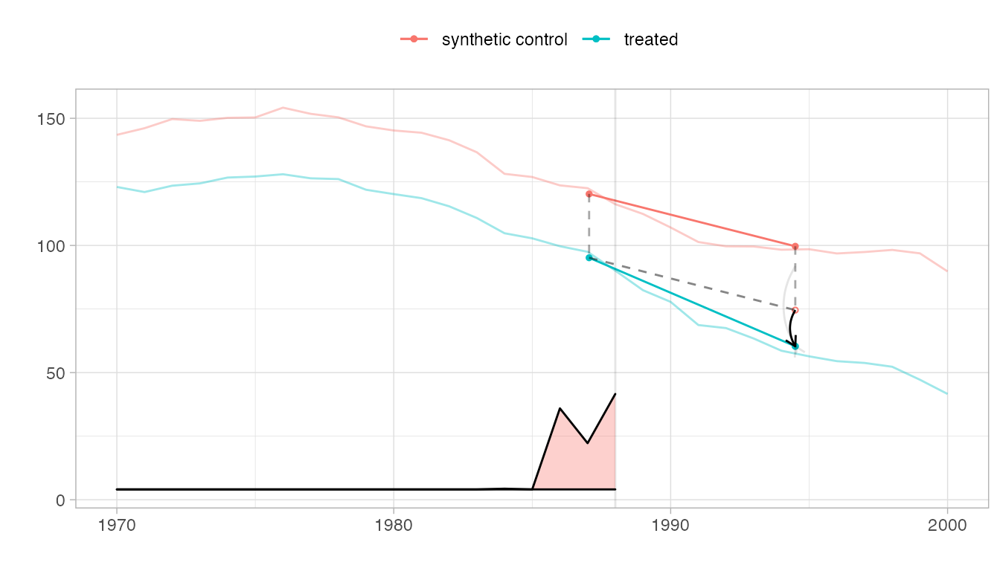
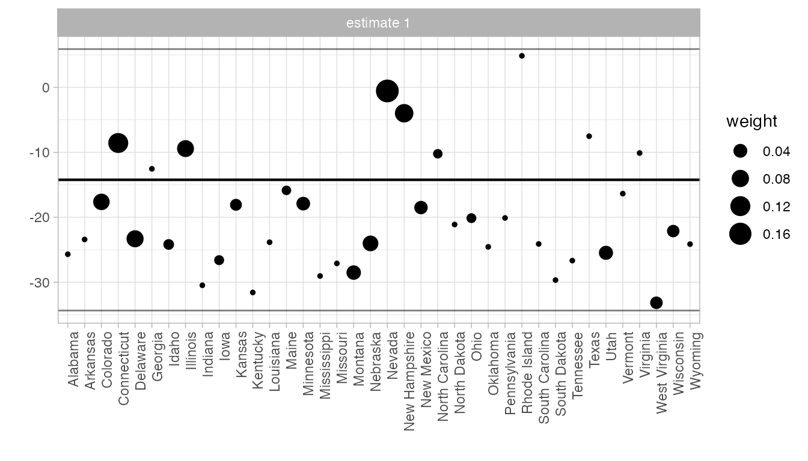
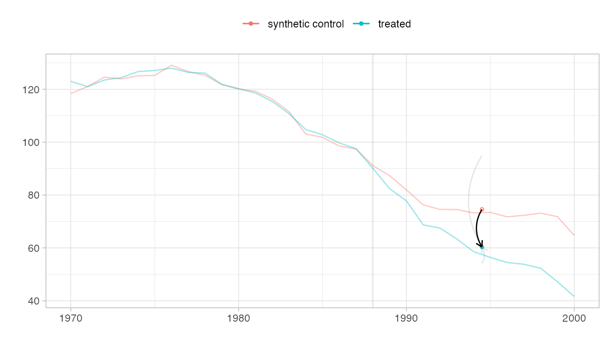
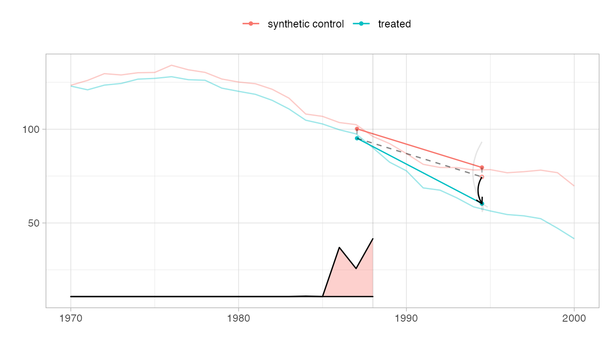
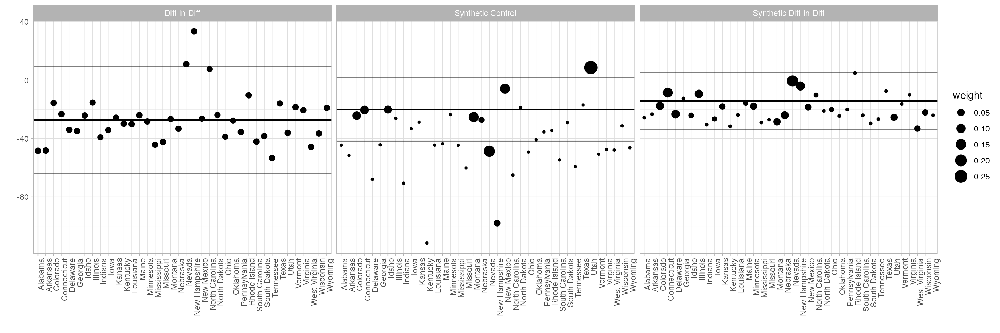
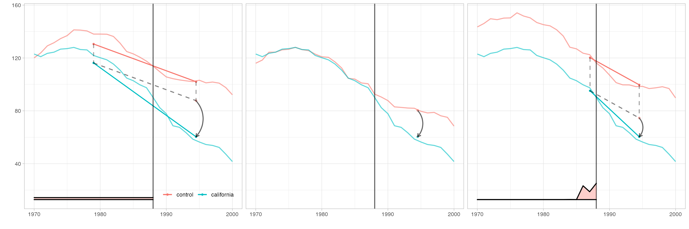
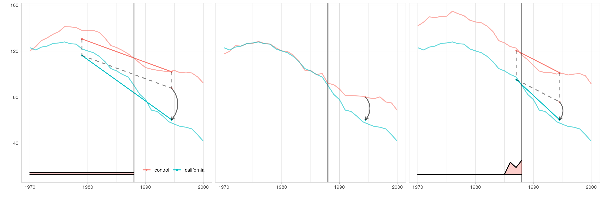
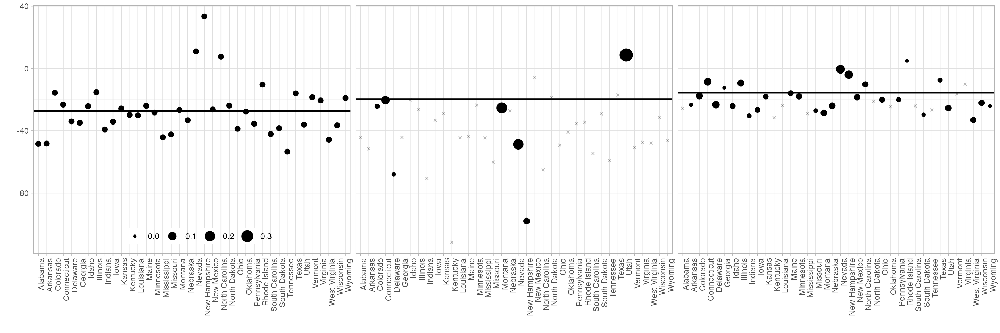

We estimate the effect of California Proposition 99 on cigarette consumption
We have only one treated unit (California), so the only implemented method to estimate the standard error is the ‘placebo’ method described in Section 5 of Arkhangelsky et al. Because this is not trustworthy, it is not used by default: vcov instead returns NA. Here it is probably too large.
But to show how confidence intervals are constructed and displayed, we’ll use it anyway. To do this, we pass method=‘placebo’ to vcov and pass se.method=‘placebo’ to our plotting functions so they do the same. If we didn’t, the plots wouldn’t show have standard errors.
data('california_prop99') setup = panel.matrices(california_prop99) tau.hat = synthdid_estimate(setup$Y, setup$N0, setup$T0) tau.hat #> synthdid: -15.604 +- NA. Effective N0/N0 = 16.4/38~0.4. Effective T0/T0 = 2.8/19~0.1. N1,T1 = 1,12. print(summary(tau.hat)) #> $estimate #> [1] -15.60383 #> #> $se #> [,1] #> [1,] NA #> #> $controls #> estimate 1 #> Nevada 0.124 #> New Hampshire 0.105 #> Connecticut 0.078 #> Delaware 0.070 #> Colorado 0.058 #> Illinois 0.053 #> Nebraska 0.048 #> Montana 0.045 #> Utah 0.042 #> New Mexico 0.041 #> Minnesota 0.039 #> Wisconsin 0.037 #> West Virginia 0.034 #> North Carolina 0.033 #> Idaho 0.031 #> Ohio 0.031 #> Maine 0.028 #> Iowa 0.026 #> #> $periods #> estimate 1 #> 1988 0.427 #> 1986 0.366 #> 1987 0.206 #> #> $dimensions #> N1 N0 N0.effective T1 T0 T0.effective #> 1.000 38.000 16.388 12.000 19.000 2.783 se = sqrt(vcov(tau.hat, method='placebo')) sprintf('point estimate: %1.2f', tau.hat) #> [1] "point estimate: -15.60" sprintf('95%% CI (%1.2f, %1.2f)', tau.hat - 1.96 * se, tau.hat + 1.96 * se) #> [1] "95% CI (-32.01, 0.80)"
We show the trajectories of California and the synthetic control we compare it to, with a vertical line indicating onset of treatment. The relative size of the weights \(\lambda_t\) for pre-treatment periods are shown on the bottom. Overlaid is a diagram of the estimate.
The blue segment shows the change from the weighted pre-treatment average to the post-treatment average California. The red one does the same for a synthetic control.
Our premise is that, absent treatment, California would change like the synthetic control: from California’s pre-treatment average, we draw a dashed segment parallel to the control’s red one. Where it ends is our estimate of what we’d have observed in California had, contrary to fact, it not been treated.
Comparing this counterfactual estimate to what we observed in the real world, we get a treatment effect. We show it with a black arrow. We show a 95% confidence interval with two gray arrows: one for the upper confidence bound and one for the lower.
plot(tau.hat, se.method='placebo')

We could draw the plot above, and get a questionable treatment effect estimate, by comparison to any individual control state. Our actual estimate is a weighted average of these: the weights are the synthetic control weights \(\omega_i\). This plot shows each individual comparison with a dot, with weight \(\omega_i\) determining the dot size. The black horizontal line shows the actual effect; the gray ones show the endpoints of a 95% confidence interval.
synthdid_units_plot(tau.hat, se.method='placebo')

When the synthetic control and treated trajectories are far from one another, it can be hard to see how parallel they are. Pass overlay=1 to plot to overlay them.
plot(tau.hat, overlay=1, se.method='placebo')
 Pass values between zero and one to shift the control’s trajectory toward California.
plot(tau.hat, overlay=.8, se.method='placebo')

We compare to synthetic control and diff-in-diff.
tau.sc = sc_estimate(setup$Y, setup$N0, setup$T0) tau.did = did_estimate(setup$Y, setup$N0, setup$T0) estimates = list(tau.did, tau.sc, tau.hat) names(estimates) = c('Diff-in-Diff', 'Synthetic Control', 'Synthetic Diff-in-Diff')
print(unlist(estimates)) #> Diff-in-Diff Synthetic Control Synthetic Diff-in-Diff #> -27.34911 -19.61966 -15.60383
synthdid_plot(estimates, se.method='placebo')

synthdid_units_plot(estimates, se.method='placebo')

Arguments to plotting functions can change the transparency, line thickness, etc. of individual elements. The output of every plotting function is a ggplot, so you can change theme, legend position, etc. as usual. We’ll use these to match the style of Figure 1 in Arkhangelsky et al.
synthdid_plot(estimates, facet.vertical=FALSE, control.name='control', treated.name='california', lambda.comparable=TRUE, se.method = 'none', trajectory.linetype = 1, line.width=.75, effect.curvature=-.4, trajectory.alpha=.7, effect.alpha=.7, diagram.alpha=1, onset.alpha=.7) + theme(legend.position=c(.26,.07), legend.direction='horizontal', legend.key=element_blank(), legend.background=element_blank(), strip.background=element_blank(), strip.text.x = element_blank())

synthdid_units_plot(estimates, se.method='none') + theme(legend.background=element_blank(), legend.title = element_blank(), legend.direction='horizontal', legend.position=c(.17,.07), strip.background=element_blank(), strip.text.x = element_blank())
